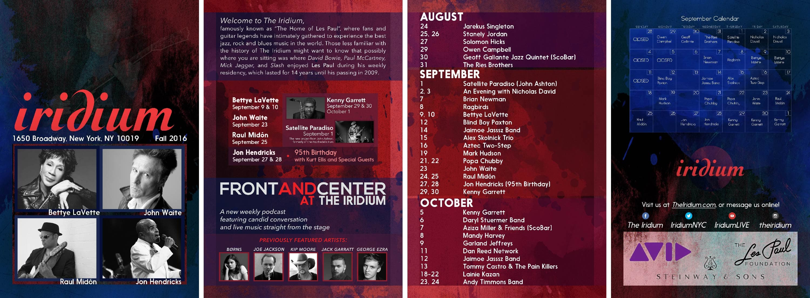

Fig. 1. Updated floor plans for The Iridium.
The Iridium is an NYC jazz club best known as the favored performance gig for the late Les Paul. The club hosts nightly concerts and also works with Front And Center, a live-concert television series, to film famous musicians and bands perform live with an audience in an intimate setting.
I undertook numerous roles at The Iridium, ranging from customer service and handing out pamphlets on the street to box office management, to administrative work, to production assistance, and finally to graphic design. The organization was/is well-equipped on all ends, but I ultimately found a stable role in assisting the company's graphic designer to create promotional materials for The Iridium as well as its sister company, Ellen's Stardust Diner.
I hadn't seriously considered graphic design as a professional prospect before The Iridium, but the organization gave me the chance to experiment with the art without much risk. It took several weeks of various work until I had the assignment to work on formatting administrative documents—I found inefficiencies in the process and consequently expedited the whole procedure by using digital techniques and Adobe apps. This revised method meant that I completed the project over a week earlier than expected, and my boss gave me more digital graphic work.
The Iridium, Front And Center, and Ellen's Stardust Diner have longstanding reputations that effectively promote each venue without the need for extensive marketing materials. Because of this unique situation, I was able to experiment with graphic design as an artistic medium to explore a variety of aesthetics and formats.
Much of my graphic work at The Iridium consisted of two primary tasks: update existing informational documents and create numerous one-off posters for use backstage or at tables in the club. At the time, I worked mostly with Photoshop when other programs (particularly Illustrator) would have been easier and better to use. Nevertheless, I managed a heavy workload by valuing legible, simple, and easily reproducible designs.
I cleaned up and updated documents from the club's "Electronic Press Kit," or EPK. For the club's floor plans, I focused on maintaining consistency across various symbols as the previous design had misleading discrepancies in shape sizes and line weights even when these objects would be identical in reality.
For the one-off posters, I began experimenting with graphic textures (i.e. graphics I could put in the background of a poster). These greatly accelerated poster design because I could consequently superimpose a textbox onto the poster and end up with an ostensibly "professional" design with little effort.
Fig. 1. Updated floor plans for The Iridium.
In the same vein as before with the floor plans, I continued to refer to older documents to create new polished designs without interrupting the club's brand. Older designs were vital references when I had to design new show posters for upcoming Front And Center tapings, as I needed to simultaneously promote the branding for The Iridium, Front And Center, and the relevant artist.
Once again, I prioritized consistency and cleanliness to depict a level of professionalism through marketing materials. Show posters already followed a fairly strict template, so I cleaned up the spacing and formatting of typographic information and introduced a new show-based color palette. I also researched each artist to find the most appropriate color scheme as well as any relevant band logos or typefaces (particularly those used in album covers).

Fig. 2. Posters designed to match aesthetic and formatting of prior designs.
I had several opportunities to branch out into less-formulaic designs. Each poster had three fundamental elements: the performance details (conveyed via text), a promotional image (provided by the artist's representation), and background graphics (usually just solid colors). As long as I adhered to these characteristics, I could explore other structures or layouts.
For a select few concerts, my boss encouraged me to explore designs that "popped" in an effort to appeal to different audiences. I achieved this by researching the visual identity of each artist, looking at album covers and promotional materials. I then incorporated elements from these designs into my posters. By doing so, I allowed the artist's brand to help us in promoting each show.
One of my largest projects was creating a pamphlet to promote the upcoming fall season. I tested a moody red-and-blue watercolor texture to give the club an aesthetic identity. I reused this idea across several graphics, including a one-sheet and a later promotional pamphlet—my goal was that the graphic identity would eventually become ingrained in the brand itself.

Fig. 3. Posters designed to expand on aesthetic and formatting of prior designs.
Fig. 4. Seasonal magazine utilizing "watercolor" aesthetic idea.
My last major project with The Iridium was to develop beverage-related graphics for the company's newest venture—a joint development with the Grand Ole Opry to open a New York venue. I worked with the beverage director to create materials with Opry-inspired iconography. This included copying the entrance door window shapes at the actual Grand Ole Opry in Nashville to design creative layouts for wine labels. Other symbolic elements included the iconic "circle" at the Opry, as well as the Nashville city skyline and the venue's associated radio station, WSM.
Fig. 5. Coasters with Opry iconography.

Fig. 6. Wine labels inspired by windows at the original Grand Ole Opry.
The Iridium provided an invaluable incubational period for me to development my skillset. My role mainly consisted of filling in areas where the company graphic designer could not devote time, which included numerous non-creative tasks like designing a step-and-repeat. Even so, I previously never had the opportunity to make use of my design skills in a professional environment. I used this time to research aesthetic identities and explore the meaning of branding. In hindsight, there were many ways to improve my work and optimize my process, but I'm glad to have gotten the chance to begin designing without the weight of such responsibilities. ◼
{kind=link}
{kind=link}